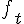
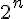
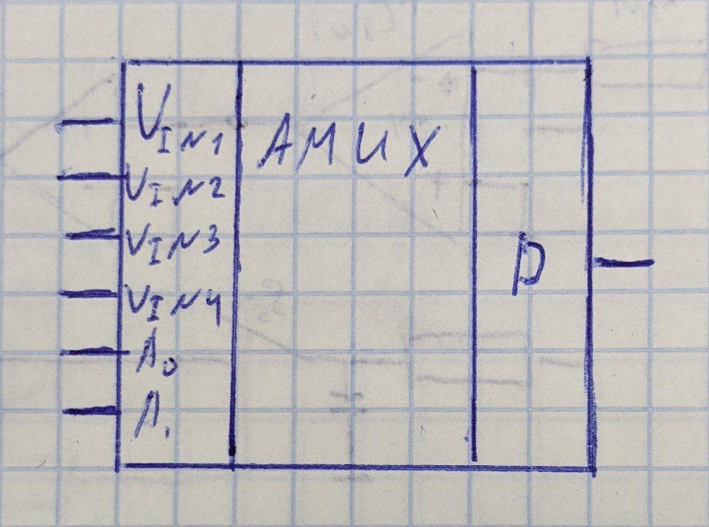
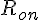
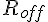
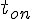
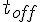

 - частота выдачи сигналов компаратором, частота должна быть в  больше чем частота изменения входного сигнала
Плюсы и минусы -АЦП
Плюсы:
- Простота схемы
- Высокая точность преобразования
- Усредение выходного сигнала
- Изменяемая разрядность
Минусы:34
- Высокая точность достигается только при медленном изменении входного сигнала
- Предпоследний по скорости преобразования (быстрее чем интегрирующий)
- Необходимость подключения высокочастотного ГТИ
- Необходимость изолировать кварцевый резонатор для исключения влияния помех
Аналоговый мультиплексор
Используется для коммутации аналоговых сигналов
Подразумевает наличие нескольких входных сигналов

Аналоговые мультиплексоры используют реле, оптроын, герконы, но чаще всего - МОП-ключи.
Основные параметры МОП-ключа:
- Сопротивление канала в открытом и закрытом состоянии (обычно  и )
- Разность сопротивлений каналов
- Ток утечки по входу и выходу
- Время переключения каналов (обычно  и )
- Температурный дрейф параметров